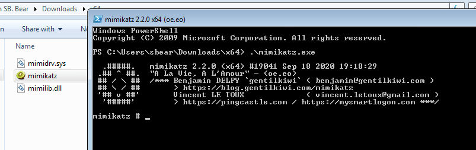
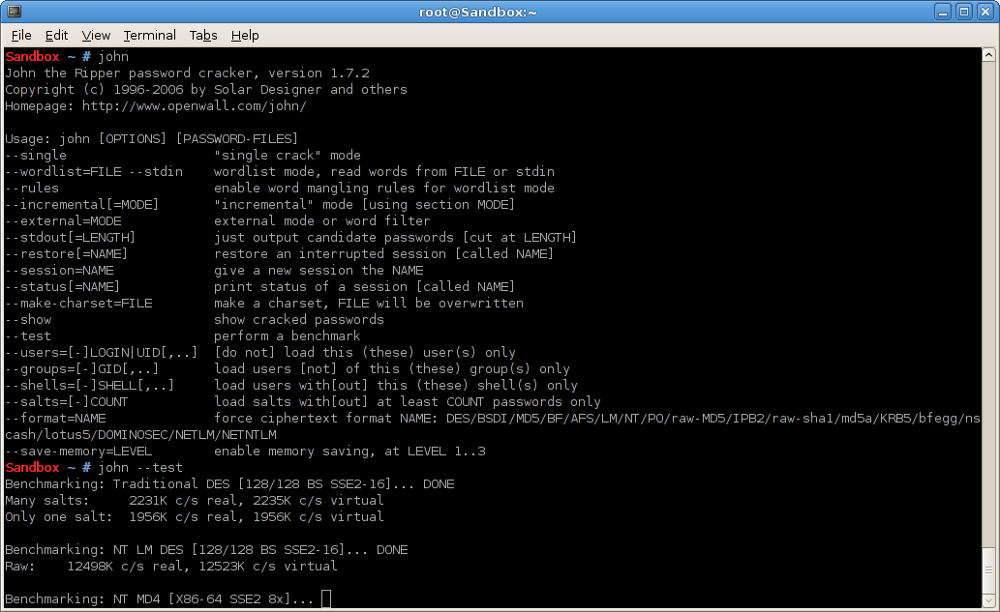
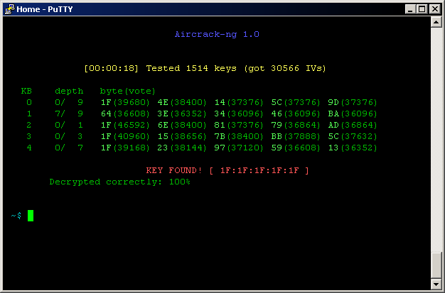
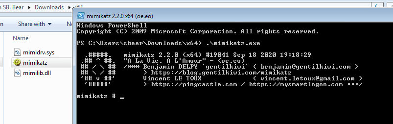
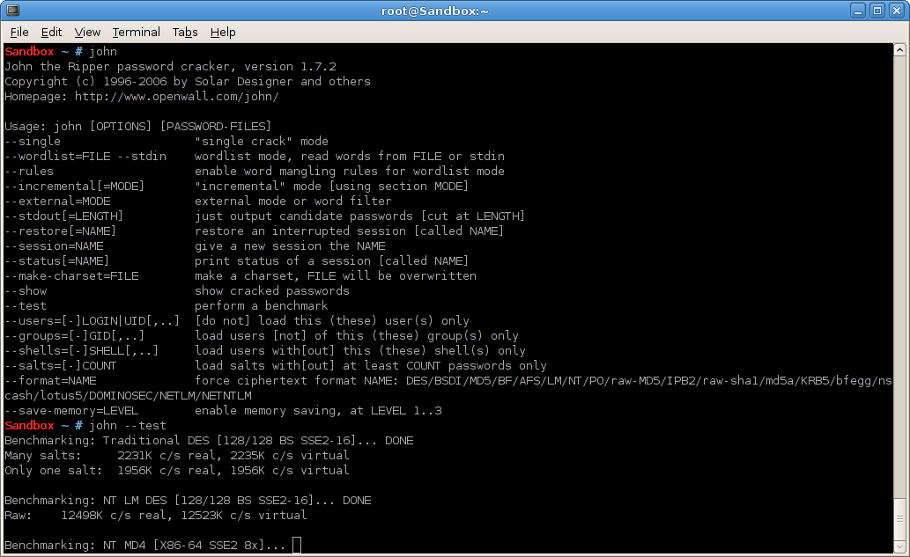
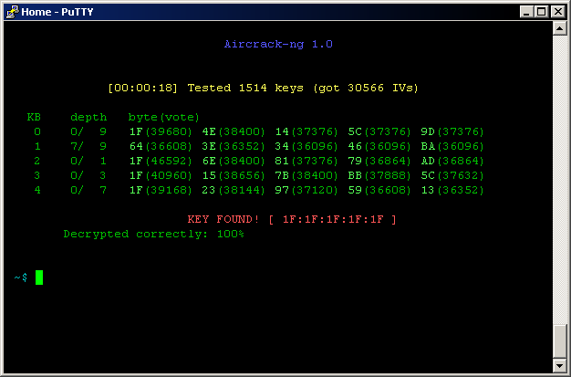

Blue Team, Red Team, Purple Team…
de quoi parle-t-on ?
Enchanté !
 CEFCYSien
depuis 2021
CEFCYSien
depuis 2021 Opérationnel depuis 2015
Opérationnel depuis 2015 Réponse aux
incidents chez
Réponse aux
incidents chez 
 SOC
chez
SOC
chez 
 CEFCYSien
depuis 2021
CEFCYSien
depuis 2021 Opérationnel depuis 2015
Opérationnel depuis 2015 Réponse aux
incidents chez
Réponse aux
incidents chez  SOC
chez
SOC
chez De quoi va-t-on parler ?
- La sécurité offensive
- La sécurité défensive
- Le SOC
- Le CSIRT
- Le RIC
- La fusion des services
NB : le monde de la SSI reste récent et ses métiers évoluent
rapidement !
NB2 : autant que possible cette présentation est en français ; ça peut
surprendre.
NB3 : les métiers présentés n'existent pas tous dans toutes les structures,
ça dépend des moyens et missions de chacune
Les opérations en SSI
Tout tourne autour de l'incident
- Anticipation (audit, test d'intrusion, exercices, renseignement d'intérêt cyber)
- Détection (scénarios d'attaque, collecte de journaux, règles de corrélation)
- Réaction (traitement des incidents, analyse forensique, remédiation)
1. La sécurité offensive
Missions
- Évaluer le niveau de sécurité d'un SI
- Audit (de configurations/codes)
- Test d'Intrusion : périmètre défini
- Red Team : comportement identique à celui d'un attaquant
Red Team
- Ingénierie Sociale
- Pénétration physique
- Exploitation de vulnérabilités
Qui ?


La Cyber Kill Chain

Quelques outils
 






2. La sécurité défensive
Missions
- Protection des infrastructures
- Détection des incidents
- Réponse aux incidents
- Chasse

3. Le SOC
Security Operations Centercollecte de journaux
définition de scénarios offensifs
création de règles de
détection
analyse des comportement
réaction aux incidents
Collecte
Le SIEM
Security Information and Event Management


Le SIRP
Security Incident Response Platform
Le SOAR
Security Orchestration Automation & Response
4. Le CSIRT
Computer Security Incident Response Team
La collecte − Réseau

L'analyse − Réseau

Systèmes

Mémoire
Mobiles

La rétro ingénierie
La rétro ingénierie
Que fait ce code malveillant ?
Quelle est la configuration de ce maliciel ?
Quels indicateurs additionnels peuvent servir à l'investigation ?
Est-ce possible de casser la cryptographie utilisée ?
La rétro ingénierie
PEiD | CFF Explorer | 010 Editor
radare2 | ida | Miasm


5. Le Renseignement d'intérêt cyber
CTI : Cyber Threat IntelligenceBeaucoup d'outils d'analyse
VirusTotal | OTX
AlienVault
Censys.io | DomainTools | robtex
CertStream | URLHaus
any.run | Hybrid
Analysis | JoeSandbox | Cuckoo
Maltego
la TIP
C'est une base des connaissances sur la menace
- Observables
- Modes Opératoires Adverses (MOA)
- Rapports
- Techniques, Tactiques et Procédures (TTP)
Exemples : OpenCTI | ThreatQuotient
6. Comment tout ça s'assemble?
Le Cyber Fusion Center
Et du coup la purple team?

Et du coup la purple team?
Réduction des silos entre les équipes
Validation de cas d'usage
Entrainement de la Red Team
- Red : attaque
- Purple : coopération red+blue
- Blue : défense
- White : arbitres/pilotage
Merci
Crédits
- Icons made by Gregor Cresnar from www.flaticon.com